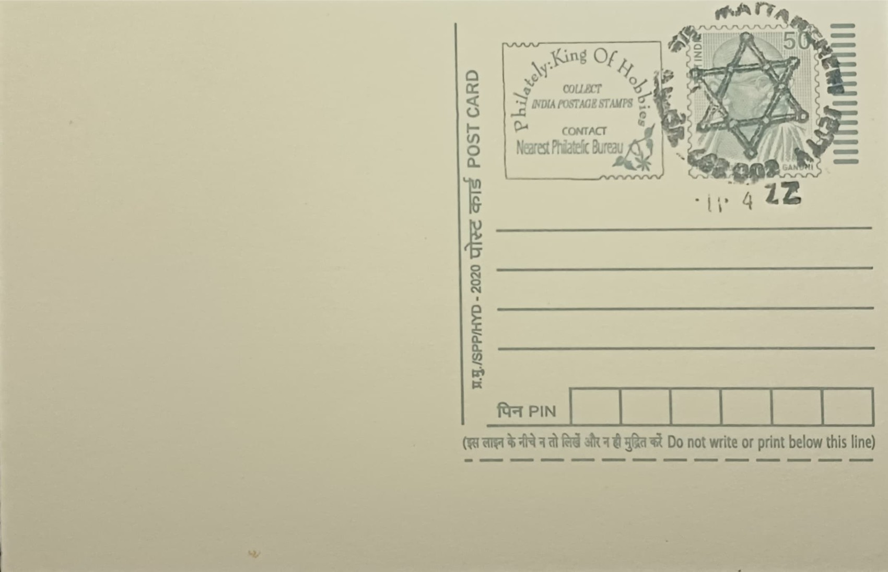

Magen David of Cochin Synagogue
കൊച്ചി സിനഗോഗിന്റെ മാഗൻ ദാവീദ്


The Magen David, or Star of David, that appears on the gatework and furnishings of the Paradesi Synagogue in Mattancherry takes its name from the six-pointed hexagram long associated with the House of David and, by extension, with Jewish identity across the diaspora. Its presence here is tied to the arrival of Jewish traders along the Malabar coast, a settlement local tradition and the synagogue's own copper-plate charter trace back well over a millennium, long before the Paradesi community itself took shape. The specific building that now bears the emblem was raised in 1568, when Kochi's "Paradesi" (foreign-origin) Jews, many of Sephardic descent, established their own house of worship alongside the older Malabari Jewish congregations already present in the region.
As the symbol fixed to the wrought-iron entrance gates and interior fittings of the oldest surviving synagogue in the Commonwealth of Nations, the Magen David marks a site of singular religious and historical importance in Indian Jewish life. The synagogue stands adjacent to the Mattancherry Palace temple, on land granted to the community by the Kochi Raja, Rama Varma, a juxtaposition of Hindu and Jewish sacred space that is frequently cited as evidence of the religious accommodation historically extended by Kerala's rulers. Protected today as a heritage monument under the Archaeological Survey of India and still functioning as an active place of worship, it anchors the wider narrative of the Cochin Jewish community, whose documented privileges and land grants form one of the oldest continuous records of a Jewish settlement in Asia.
The synagogue was built in 1568 by members of the Paradesi community, with figures such as Samuel Castiel, David Belila and Joseph Levi traditionally credited among its founders, on a plot beside the royal temple complex. Its interior combines locally sourced materials with imported craftsmanship: the floor is laid with hundreds of hand-painted, willow-pattern porcelain tiles brought from China in the eighteenth century, no two of which are identical, while Belgian glass chandeliers and oil lamps hang from the ceiling and a brass-railed pulpit stands near the ark holding the scrolls of the Law. An eighteenth-century clock tower, roughly forty-five feet high and added to the complex in 1761, rises beside the main hall, its four faces bearing numerals in Hebrew, Roman, Arabic and Malayalam script, a detail frequently noted as emblematic of the multiple cultural currents the community absorbed.
Among the synagogue's most historically weighty holdings are a set of copper plates, inscribed in Old Malayalam and conventionally dated to the tenth century, recording a grant of hereditary privileges to Joseph Rabban, identified in tradition as the leader of Kochi's early Jewish settlers, by a Malabar ruler often associated with Cheraman Perumal. These plates, along with gold crowns presented to the congregation over the centuries, are preserved within the synagogue and are regarded as among the earliest surviving documentary evidence of organized Jewish settlement on the Indian subcontinent. The building and its contents survived Portuguese attacks in the sixteenth century that destroyed an earlier synagogue on the site, after which the Dutch helped fund its rebuilding, underscoring the shifting colonial politics that shaped the community's fortunes over successive centuries.
Following the mass emigration of Cochin Jews to Israel after 1948, the Paradesi community in Mattancherry dwindled to a small handful of resident families, and the synagogue's clock tower and surrounding structures underwent a documented restoration between 1998 and 1999 carried out by architect Karl Damschen under the World Monuments Fund. The site today draws visitors as part of Kochi's Jew Town heritage precinct, maintained jointly by the remaining Paradesi families and state heritage authorities who keep it open for both worship on Jewish holidays and public viewing on other days of the week.
| Date of Introduction | March 9, 1982 |
|---|---|
| Address | Sub Postmaster, |
| Mattancherry Jetty SO, | |
| Ernakulam (dt.), Kerala - 682002. |